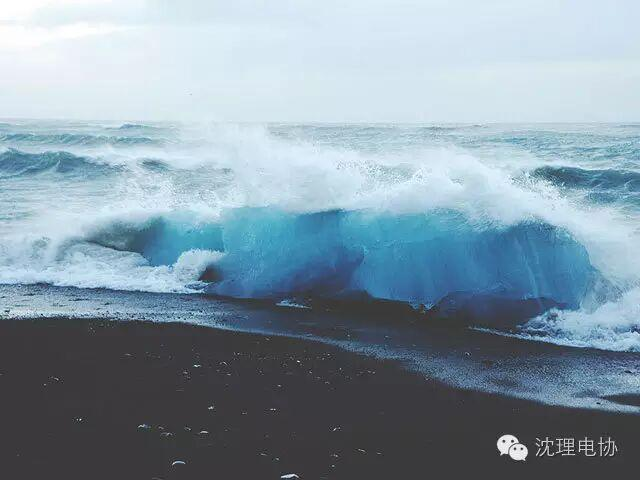
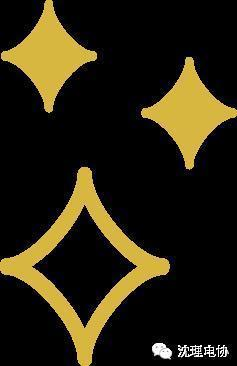

使用小程序
点击上方“蓝字”关注电协君哦~
元气大学生的必备修养
当你
遇到棘手的事情
被误会的时候
独自一人孤单的时候
莫名其妙很难过的时候
或者
偶尔想起的ta
你会做什么呢？
元气
蒙在被子里躺在床上
大哭一场
不爱惜自己的自虐
用身体上的疼痛来麻痹自己
可是
麻痹的疼痛
真的会让心里的难过消失吗
其实电协君也不知道
要怎么做才会让人
忘掉忧愁
解决伤心事真可以不忧愁吗
真的
解决了一件
可还是会有下一件的
于是我总是在心里告诉自己
安慰自己
我现在的难过都是
为了自己的没用找借口
所以
大学生的你们
会承认自己的没用吗
不承认的话
就做给自己看啊
电协君最喜欢的呢
当然也是向好友哭诉啊
自己憋在心里有什么用
会自己消失吗？！
有什么话
说啊
无论什么样的问题
都不会有人去嘲笑你的
因为
嘲笑你的人
没资格去知道你的心事
当成你生命中的过客就好了
不必深交
失魂落魄
在我们身上是不合适的
因为
小太阳
要每天充满能量
要是人们失去了小太阳
会活不下去的
所以说啊
少年，你身上的责任很重啊！
感激伤害你的人
因为他磨练了你的心志
感激欺骗你的人
因为他增进了你的见识
感激鞭打你的人
因为他消除了你的业障
感激遗弃你的人
因为他教导了你应自立
感激绊倒你的人
因为他强化了你的能力
感激斥责你的人
因为他助长了你的定慧
生活在感恩的世界里
生活才会更精彩
借我孤绝若初见
借我不怕碾压的鲜活
Q
电协君还有没有一些元气小绝招呢？！~
电协君
清晨
怀怉一个希望
抛弃昨天的低落
笑迎明媚的朝阳
精神抖擞
活力充沛的往前迈步
心念一份淡然
依自己的心
做自己该做的事
与人相处 以合为善
不争不抢 不媚不亢
低调做人 高调做事
多些淡然 少些虚荣
多些真诚 少些寐意
多些付出 少些索取
多些感恩 少些抱怨

好在
我们这个年纪
不需要承担太多太多的责任
所以
你有的是机会犯错
然后改正
难过的事情
睡一觉，忘记
不就好了嘛

品读之后，
愿享同感。
by.范淼
关注电协君哦